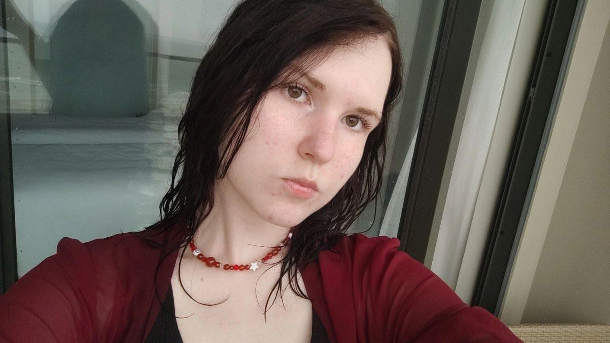

1 место2023
Smart Sort
Умная система сортировки отходов на компьютерном зрении: камера распознаёт предмет (пластик, стекло, бумага) и направляет его в нужный контейнер. Рабочий прототип — 1 место на конкурсе инновационных проектов.
Студентка 2 курса Anhalt International University. Создаю ИИ-прототипы, участвую в хакатонах и снимаю международные турниры WDSF.

Выпускница гимназии с отличием, победитель республиканских олимпиад по математике и информатике. Разработала прототип системы сортировки отходов на основе ИИ, получила грант ЮНИСЕФ на социальный проект в программе Upshift SAMGAU.
Совмещаю учёбу с проектами, хакатонами и работой на международных мероприятиях. Быстро учусь, легко вливаюсь в новую команду, проявляю инициативу и довожу начатое до результата.
Anhalt International University
Электротехника и информационные системы · 2 курс
Школа-гимназия №51, Алматы
2014–2025 · аттестат с отличием · углублённо математика, физика, информатика, английский
Умная система сортировки отходов на компьютерном зрении: камера распознаёт предмет (пластик, стекло, бумага) и направляет его в нужный контейнер. Рабочий прототип — 1 место на конкурсе инновационных проектов.
Участница хакатона по агентному ИИ, установившего мировой рекорд «Most Participants in an Agentic AI Hackathon».
Экологическая цифровая инициатива: командная разработка прототипа для сортировки и переработки отходов в ограниченное время.
4-этапный буткемп по социальным инновациям под эгидой ЮНИСЕФ. Проект реализован на финальном этапе и получил грантовое финансирование.
Участница кейс-чемпионата SPECTRUM Case Championship 2026.
Wildlife Photographer of the Year Academy (British Council, NHM London). Лучшие снимки — на выставке в Ботаническом саду Алматы.
Медиасопровождение международного турнира по спортивным танцам. Certificate of Recognition от оргкомитета и главных судей WDSF.
Медиасопровождение международного фестиваля. Certificate of Appreciation от организатора KTA — King The Art.
Работа в медиакоманде международного турнира.
Организация встреч клуба, съёмка и обработка мероприятий, подготовка визуала для выставок и соцсетей.
Дизайн и изготовление украшений, работа с клиентами, продажи и продвижение.
Открыта к стажировкам, проектам и медиа-задачам на международных событиях.